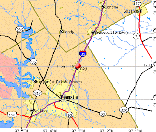

(Thanks to the Strike The Root blog.)
A robber poses with his loot: The lucrative racket called "asset forfeiture," in which police steal money, cars, homes, and other valuables without convicting their owners of crimes, is a major reason why the fraudulent "War on Drugs" continues.
David Seward's problem wasn't his greed. It was his inability to transmute that greed into public policy.

Until August 2006, Seward was Chief of Police for the town of Troy, Texas (pop. circa 1,400). As I noted in this space shortly after the event, Seward was fired -- along with the three other officers who composed the police force -- amid accusations that he had misappropriated funds "seized during criminal investigations." Specifically, the money was confiscated after drugs were found in a car during a traffic stop.
He allegedly blew a relatively trivial sum -- described in the misdemeanor criminal complaint as "more than $500 and less than $1,500" -- on clothes, meals, gasoline, a rental car, vacations, and an embroidery machine (presumably for his wife).
For a brief period, Troy was deprived of the dubious protection of a police force, relying instead on the Bell County Sheriff's Department. Regrettably, the City Council reversed itself and reconstituted the police force.
Although Seward was arrested and booked on the theft charge earlier this year, he failed to appear for a June 11 court appearance and his current whereabouts are unknown.
Although he is the subject of an arrest warrant, the prosecutor very generously declined to tack on a "failure to appear" charge, as he doubtless would were the accused a mundane, rather than a former police chief. Furthermore, Bell County assistant prosecutor Ken Kalafut "did not know if law enforcement officers were actively seeking Seward," reported the Waco Tribune.
It's obvious that capturing Seward is not a pressing priority for his successors. After all, asset forfeiture -- the seizure of cash, cars, homes, and other valuables from people who are often neither convicted of, nor charged with, a criminal offense -- is a huge business in Texas, netting some $125 million for police agencies last year.
With such sums slopping police troughs across the state, it's impossible to believe that Seward's piffling misuse of a few hundred dollars here and there was the most serious instance of official corruption involving "forfeited" money. If he had somehow been able to swaddle his avarice in a serviceable bureaucratic rationale, Seward would still have his job.


Indeed, Seward's lack of discipline cost him what could have been a very lucrative gig. As Texas towns go, Troy (represented by the red dot on the map) is an insignificant insect, but it's a mosquito that's drilled into a major artery -- in this case, Interstate-35, which serves as a major conduit for drug traffickers and other traffic to and from Mexico.This provides a ready-made rationale for seizing cash and other pelf from "suspicious" motorists, and anybody else who blunders into a traffic stop in or near Troy. In fact, according to a recent federal court ruling, the mere possession of a large amount of cash by a motorist provides sufficient justification for its seizure by law enforcement.
If he'd been blessed with a gift for "creative writing," or had the minimal self-control to avoid stealing small amounts of money, Seward could have turned his four-man police force into a lucrative shake-down outfit: A small town sitting astride a major interstate in the middle of nowhere would have been an ideal speed trap, and every traffic stop would be a chance for a big haul.
Support Your Local Highway Robber: Brian Gilbert, former Dallas County (Iowa) Sheriff, convicted of stealing $120,000 in "forfeited" money. Is it just me, or does he look a bit like Will Teasle (Brian Dennehy), the "King Sh*t" Washington cop from First Blood (below, right)?

That's how things worked for the Sheriff's Department of Dallas County, Iowa, located along Interstate 85, which is perhaps the country's most heavily traveled East-West freeway. Under the direction of former Sheriff Brian Gilbert, the Dallas County Sheriff's Department hauled in millions over the course of several years -- and then Gilbert got a little too greedy, making off with paper sacks containing $120,000 seized in a traffic stop.
Gilbert's punishment was a suspended ten year prison sentence, five years' probation, and a term of make-work "community service."
It's quite reasonable to believe that Gilbert's punishment would have been considerably more severe had he stolen $120,000 without the benefit of a wearing an official law enforcement costume.

Heck, given the leniency extended to Brian Gilbert for committing a major felony theft, David Seward really ought to turn himself in. Either that, or migrate to Iowa in search of a job in Dallas County.
East of Seward's old hometown can be found Kingsville, Texas, a rustic and picturesque town that serves as the Kleberg County Seat. More importantly, Kingsville is located on U.S. Highway 77, which in some sections runs parallel to I-35 and serves as an alternative route for drug couriers bringing their product into the U.S., and taking cash back out.
(Highway 77 also runs right through the City of La Grange, settled by Germans in the early 19th century and noted primarily for being near the little shack of ill-repute made famous in ZZ Top's imperishable blues-rock jam tune.)
NPR reported recently that "For impoverished cities and counties situated along 77 [the narcotics and drug money traffic] is like a river of gold. On one 15-mile section that runs through ... Kleberg County, the southbound lanes have become a `piggy bank,' according to the local sheriff. In the past four years, combined seizures [of cash] have surpassed $7 million."
That's why Kleberg County Sheriff Ed Mata "drives a gleaming new police-package Ford Expedition bought with drug funds," and this year was able to hit up the County Commission for a new fleet of vehicles for his department.
It's likewise the reason why the Kingsville PD, which patrols a somnolent city of 25,000 in which violent crime is as scarce as Ytterbium, "drive high-performance Dodge Chargers and use $40,000 digital ticket writers," as NPR reports. That same police force will "soon carry military-style assault rifles, and the SWAT team" -- yes, a town that size with an all-but-nonexistent violent crime problem has a SWAT team -- "recently acquired sniper rifles."
Ah, but the sniper rifles and other toys purchased with forfeited boodle are vital "homeland security" assets, insists Police Chief Ricardo Torres. "We have to be prepared," he insists, as he -- like other police administrators mainlining on drug money -- fatten up their budgets.
Oh, how David Seward must be kicking himself for blowing such a potentially profitable opportunity!
Photo courtesy of James Bovard.

But the forfeiture scam is much more than merely an inexhaustible source of police corruption and a mammoth kick-back scheme between narcotics lords and the law enforcement agencies who enforce drug prohibition -- thereby keeping narcotics prices artificially high.
Kingsville offers a very telling illustration of how federally abetted highway robbery by police, a major facet of the "war on drugs," has been a very effective means of militarizing "local" law enforcement by stealth.
Not quite a decade ago, Kingsville residents were quite understandably alarmed when the Army Special Operations Command at Ft. Bragg chose their torpid little town as the staging area for "Operation Last Dance," a live-fire exercise involving an uber-elite group from Delta Force called the Night Stalkers. The exercise included minor roles for the local police department, including its SWAT team.
According to Tomas Sanchez, at the time Kingsville's head of emergency management, "Operation Last Dance" involved (as summarized by WorldNetDaily) "a scenario that required military action because local police could not deal with civilians effectively."
"Martial law has been declared through presidential powers and [the] war powers act, and some citizens have refused to give up their weapons," Sanchez reportedly explained. "The police cannot handle it. So you call these guys in" -- that is, the Night Stalkers or similarly constituted special forces personnel. "They show up and they zap everybody, take all the weapons, and let the local P.D. clean it up."
Sanchez pointed out that "Operation Last Dance" left much of the town panicked and nearly all of it angry. Blackhawk attack helicopters used in the training exercise rattled windows and left many of the city's inhabitants terrified. One of the helicopters collided with a telephone pole and started a fire. Elsewhere trainees used live ammunition and set off explosive charges. The result was a general uproar, with angry citizens flocking to city council and county commission meetings and municipal authorities filing official complaints.
Now, however, with the help of both direct federal subsidies and the federally authorized take from highway shake-downs, Kingsville's "local" police department is quickly becoming a militarized affiliate of the homeland security state. And nary a syllable of protest can be heard.
Indeed, this ingenious back-door narco-subsidy of police militarization is taking place not only across Texas -- where Mexican drug profits are presumably plentiful, as are innocent victims who are fleeced in the name of forfeiture -- but nation-wide:
Lethal plaything: The Gwinnett County (Georgia) Sheriff's Department's armored SWAT vehicle.

*Brownsville, Texas recently used forfeiture funds to buy a Lenco BearCat armored vehicle, made famous in the police assault on harmless eccentric Robert Bayliss in rural Wisconsin;
*Georgia's Gwinnett County Sheriff's Department recently spent a wad of forfeiture funds to upgrade an armored SWAT vehicle that proved useless in a standoff that ended with the death of a 31-year-old woman;
*Canton, Ohio's Police Department dipped into the city till and found $100,000 in forfeited funds to buy its own armored SWAT vehicle, which was cheerfully described as a future mobile command post "for potential school shootings and terrorist attacks" -- neither of which, unlike police gang-molestation of attractive women taken into custody, has afflicted that part of Ohio, but, hey, keep a good thought;
*Police in Westland, Michigan presented the $114,113 purchase of an armored SWAT vehicle as a uniquely sweet deal. "There was no general fund money used—it was all drug forfeiture money,” exulted Westland Police Chief James Ridener. “The bad guys got to pay for it.” And once it's broken in and fully tricked out, Ridener continued, "We'll probably use it every week for narcotics [raids]."
"You see, kids, someday neat trucks like this will swarm our neighborhoods to flush out and carry away all the bad people whose names are on The Official List": Fresno, California's armored SWAT vehicle.

For those who pay attention, Ridener's last comment boldly underscores the evil symbiosis behind the murderous fraud called the war on drugs.
Why should police agencies want to "end" drug trafficking, when it is the source of inexhaustible largesse?
And why should police personnel consider themselves accountable those who live in the communities they occupy when they have Washington's permission simply to steal whatever amount they can and spend it on lethal toys?

(Yes, this decal is real, and is displayed on the bumpers of at least some LEOs. Thanks to J.D. Tuccille for bringing this to our attention.)
 Available now!
Available now! Dum spiro, pugno!
21 comments:
Re: having cash is a crime, I think that just proves that the government really IS fighting inflation. It prints the money, buys stuff with it, then takes it from people via taxes, fees, regulation or asset seizure, then it buys MORE stuff with it.
I'm not sure how it is fighting inflation, but the FEDs reason for existence is to fight inflation, which it alone creates, so the justification is equally valid here.
Police corruption has existed for as long as there have been police departments. Even legendary Old West lawmen like Wyatt Earp and Bat Masterson worked both sides of the law.
The asset forfeiture business is far more lucrative than the average speed trap. Troy, Texas, does not have a particularly bad record as a speed trap, unlike notorious towns like Big Cabin, Oklahoma or Estelline, Texas, both on major highways as well. Towns like this pay a price for being a speed trap, as drivers boycott the local merchants and residents of such towns are derided when they go to other parts of Oklahoma or Texas. People from places like Troy, Texas, are not so derided and the local merchants are not boycotted by travellers. Additionally, the local lawmen will on occasion catch a state legislator or a relative of one, often leading that state legislature to place the worst speed trap towns on a leash. Police departments sponsoring asset forfeitures do not undergo such restraints.
It is unlikely controlled substances will become legal or even decriminalized in the forseeable future. Both parties have too much stake in the system as it exists. However, the day may come when the drug smugglers will no longer be willing to put up with an occasional interception of their product and the arrest and imprisonment of low level associates. That day came in Mexico a few years ago, when the Mexican drug cartels neutralized local and state officers, and even the Federales, by a combination of physical intimidation and bribery. An overly greedy small town police chief or two may find himself "sleeping with the fishes".
However, the day may come when the drug smugglers will no longer be willing to put up with an occasional interception of their product and the arrest and imprisonment of low level associates. That day came in Mexico a few years ago, when the Mexican drug cartels neutralized local and state officers, and even the Federales, by a combination of physical intimidation and bribery. An overly greedy small town police chief or two may find himself "sleeping with the fishes".
The fact that this hasn't happened with any frequency (at least not according to the organs of the MSM) calls into question the claim made by "law enforcement" whenever it stretches its hand out to Leviathan for more funding that "the drug lords are more heavily armed than we are." Were this the case, narcomobs would be running roughshod over the State's hired guns, with cops either abandoning their posts in droves for fear of the narco-asssassin's bullet or refusing to pursue drug suspects for fear of reprisal.
Note too that the World's Policeman, who demonstrates utter fearlessness in invading, occupying, and destroying other underdeveloped and militarily primitive nations across the globe, does not use its heavy firepower to launch cross-border raids into Baja California, Sonora, Chihuahua, Coahuila, Nuevo Leon, and Tamaulipas, Mexican states that abut its own backyard, in search-and-destroy missions against the sources of this narcotrafficking. Rather, all of this firepower has been turned on innocent, unarmed citizens within our own borders. No, indeed, the two halves of the State Party have a deeply vested interest in continuing the phony "War on Drugs" which, even the densest of Amoricons is now realizing, is a war of murder and plunder against the People at home.
What are you going to do when they come for you? And me? And your children? Your mother, your father, your church, your neighbor. . .
Sic Semper Tyrannis indeed.
The war on drugs is but another
ploy to militarize and disorganize
our communities.
It has worked very well to
discredit the police and build
animosity, distrust and resentment
among the citizenry.
We HATE the cops and they HATE us.
Thanks Mr.Grigg for keeping this
grassroots problem centered on the
radar.
"Why should police agencies want to "end" drug trafficking, when it is the source of inexhaustible largesse?" -- Will G.
Bingo! In the previous Prohibition -- the one on alcohol -- people eventually woke up and realized that it was not only unpopular, but also was corrupting law enforcement. So they repealed it.
Why is the same recognition virtually absent today? Probably due to a constellation of factors -- dumbed-down public schooling; corporatized captive Media; officially- sponsored propaganda such as DARE and Partnership for a Drug-Free America (which effectively co-opts the press).
But in any case, the atherosclerosis of democracy under a moribund constitution is symbolized by the fact that BAD LAWS ARE NOT REPEALED ANYMORE. Indeed, almost nothing is repealed anymore. The System is unresponsive. It has become comfortably numb.
These of course were the conditions which provoked the American revolution in 1776. Who could have imagined that we would do this sh*t to ourselves? The culture has curdled.
That first picture is ridiculous. Are the cops trying to advertise for new drug dealers? It's like putting it out there for kids: "Hey kids, this is the kind of awesome stuff you can buy if you're a drug dealer." Since everyone thinks "I'm not gonna get caught like that other guy," it certainly isn't a message to kids that drug dealing is an undesirable profession.
Thanks for sharing this outrageous story! Grrr! If you have finished reading your copy of the book, Liberty in Eclipse by William Norman Grigg, please post it to PaperBackSwap.com It is on my wish list!
~ midwife
Troy does have a reputation for being a speed trap. I live 5 minutes away from Troy.
Troy also had an off duty cop that drove home drunk and hit a pregnant teenage girl head on. Luckily she wasn't killed. The cop wasn't even issued so much as a warning for this...this happened in Bruceville-Eddy, just North of Troy.
All the PDs in the Central Texas area on the intersate are crooked...Belton, Temple, Troy, Bruceville-Eddy, Lorena, Hewitt, Robinson...
Bruceville-Eddy is handing out tickets left and right even though they currently don't have a functioning court. If you want to fight a ticket, you are out of luck. They won't schedule a court date since they are "in between prosecutors". This has been the case for months now.
At least they ousted the last crooked judge.
The mission of these police departments is to generate revenue.
And they rake it in.
Well put. Since all cops everywhere are notoriously underpayed for putting their lives on the line (and for tasering us citizenry), it is only logical that they be allowed to subsidize their meager salaries. This is reminiscent of colonial British tax collectors and port authorities whose official pay was quite low, but it was understood that they would get bribes and kickbacks, and skim off the top in order to make a living. We've come full circle.
Go fuck yourself loser.
Having lived in Kingsville, TX (where they really need more paint than weapons) I can tell you that the police department glorifies itself to no end.
All you have to do is check out the local cable channel to see the KPD SWAT team break into abandoned houses for "training purposes" then pose like teenage paint-ballers with their cool weapons. And they treat the common citizen like crap.
And I can confirm that Sheriff Ed Mata dressed like a drug dealer himself - complete with shiny suits, expensive boots and tacky gold jewelry. If you saw him in person, you wouldn't believe the audacity to dress so flamboyantly for a "public servant."
I was horrified when years ago I read Roberts' & Stratton's "Tyranny of Good Intentions" which detailed many cases where the dim-witted goons we call cops robbed innocent people of property and even life under the aegis of the war on drugs. It is sickening to know it still goes on, but who would stop it? The sheeple? The government totalitarians? The dim-witted goons themselves? Nope we are screwed. Pray for total collapse, and soon.
This is how WE THE PEOPLE LOSE…
IS IT TOO LATE TO TAKE OUR COUNTRY AND GOERNMENT BACK?.. NO IT IS NOT!!!
Do you think there is a way to end this with peace? Would you be interested in a WAY OUT? Can you imagine INDEPENDENCE DAY 2008 bringing real INDEPENDENCE from this ILL-EAGLE WAR ON YOUR STREETS? > do you believe there could be a
<"PEACEFUL REVOLUTION"
MILLIONS of citizens who have figured this lie out , > A BIG FAT Y-E-S there is a lot more than that..
Wanna see the rest of the story....
Illegal aliens, < no one mentions how many of them bring DRUGS with them to survive on till they can get on welfare, free medical and your JOB, for less money They don't need as much pay, they have there ILL-EAGLE DRUG MONEY to fall back on.
Maybe you do to, and this is pissing you off, bad?
But if ya don't have,
THAT MAKES YOU <> MORE OF A VICTIM <> of the ILL-EAGLE DRUG WAR!!! …
I know most who read this, are thinking…I work for a living this drug war don't affect me
<> This idea is suggested:
Put your blinders back on, go back to sleep,
AND DREAM YOUR GRANDMOTHER, > OR CHILD WON'T BE THE > NEXT DRUG WAR associated DEATH
> ARE YOU HAVING FUN YET
THE PRICE Of "YOUR" > ILL-EAGLE WAR ON DRUGS, AND YOU
Think about it!
The TV has cops on, I had to turn it off..U ever watch these gods at work, here's a woman with 3 kids and a little bit of weed [and they ill-eagle-lie search her to find it>
well she's on the ground crying for her children, the cops have a hard time not kicking her, she goes to jail, now the three kid are screaming crying…it don't matter,
they got her…
Break for drug ads.>>>>C U'r doc. Get some today..
They are on there way to a domestic violence call, on the ride over U here about this guy they have been there other times…this guy is a EX cop alcohol took him out, now he takes it out on his old lady….
they have him in the back of the car. > HE'S CRYING, he has 3 cops all babying < him he's telling them…"I used to be one of U"
there all "I know I know, didn't we have good times in the field it will be ok don't cry>>>><> I turned it off, that or put a rock thru it….
they televise this stuff and want applause?…
ONE of hundreds of thousands of victims of YOUR ILL-EAGLE war on the American people…. and the alcohol companies win again
and the alcohol <> companies win again?????
This is how WE THE PEOPLE LOSE…
IS IT TOO LATE TO TAKE OUR COUNTRY AND GOERNMENT BACK?.. NO IT IS NOT!!!
Do you think there is a way to end this with peace? Would you be interested in a WAY OUT? Can you imagine INDEPENDENCE DAY 2008 bringing real INDEPENDENCE from this ILL-EAGLE WAR ON YOUR STREETS? > do you believe there could be a
<"PEACEFUL REVOLUTION"
MILLIONS of citizens who have figured this lie out , > A BIG FAT Y-E-S there is a lot more than that..
> You see what I mean…> The PEACEFUL WAY TO END THIS MAYHEM
< If each and every one of you forward the link to this message to 10 people, and they do the same,
within a day or so, we will be
> 300 MILLION strong > I know, and you know that there is that many in the U.S.A., that use MARIJUNA a herb
not a drug <> ..i.e.' meth heroin, crrrack, (a form of cocaine that ya hear about but not many of you really no what it is) <> in less than 2 months <> WE THE PEOPLE
COULD HAVE OUR COUNTRY AND > GOVERNMENT BACK (no more COVER-UP-MINT)
will WE THE PEOPLE ever have other options?> BIG FAT HELL NO
YES, WE CAN WIN…BUT…there is only one way it can be done
< has come down to this
< and as with any war it is NECESSARY for one side to surrender, before the war can end WE THE PEOPLE are the ones that have become the VICTIMS > We the victims are the ones that must take some action <> 300 million strong <> Bring a "BUD" <> hell for that matter bring the illegal drug of your choice, <> and we all show up at which ever FEDERAL OFFICE BULIDING is close to you, <> and we all turn our self in, the same day. <> Don't bring any form of I.D, <> That many ..DOEs' will be pretty hard to say no to.
YOU KNOW THIS WILL WORK my friend if every one of you will take time to
< FORWARD THIS MESSAGE!
> CAN THE CHILDREN OF OUR COUNTRY COUNT ON YOU…?
> PLEASE DO A LITTLE RESURCE BE FOR YA JUST SAY NO
ALL THAT IS MISSING IS A DATE
CUZZ IT'S TO DAM SCARRIE
I sincerely apologize for publishing the brief contribution from Anonymous @10:31 a.m. I allowed it through because I suspect it was written -- one letter at a time, amid great mental exertion -- by a member of our fine law enforcement community, and I certainly don't want to deprive such people of a forum in which to share their incisive insights and coruscating wit.
I didn't notice any alledged victims of the blue banditti. Did I miss something? Some innocent carrying large amounts of cash down one of these highways. I noticed some corrupt cops and some wastefull toys but still no identified victims and their claims. I would like to see some stories about the victims. Maybe they all just got killed by the drug dealers they were carrying the cash for?
Herr Siegfried, if you're interested you can read about some victims of state-sanctioned theft (aka "asset forfeiture") in the installment immediately after this one, entitled "It's A Thieves' World After All."
Not being a government employee I don't claim the kind of oracular insight that would permit me to dispense with all of that time-consuming nonsense we call "Due Process" and simply assume that someone carrying cash must be involved in the drug business.
And even those who act as couriers of drug money are legally innocent if the money is simply stolen and no chargers are filed. But of course, that's the sort of comment one would expect from a mundane (i.e. productive citizen, rather than tax consumer) like myself, I suppose.
Perhaps your reply would be something along the lines of: "Starker, zis iz Kaos. Ve don't do `due process' here!"
Dear Will,
You have touched a nerve here - once again.
At Houston’s Hobby Airport, police stopped 49-year-old Ethel Hylton and seized her luggage because a drug dog had scratched it. Agents searched her bags and strip-searched her, (no doubt fishing for justification,) but found no drugs. They did find $39,110 in cash from an insurance settlement and her life savings, accumulated through over 20 years of work as a hotel housekeeper and hospital janitor.
Ms. Hylton completely documented where she had gotten the money and was never charged with a crime. But the police kept her money anyway. Destitute, she had no way to fight them. ("Presumed Guilty: The Law's Victims in the War on Drugs," Andrew Schneider and Mary Pat Flaherty. Pittsburgh Press, 1991, pp.5-6)
In Montgomery, Ala., police seized the home of 69-year-old Gussie Mae Gantt after videotaping (of course) police informants (who else?) buying drugs in her yard. Ms. Gantt had previously called the police, complaining about drug dealing in her neighborhood, and had posted no-trespassing signs, but the drug dealers ignored them. Police waited until there was a drug deal in her yard and then seized her home. ("Forfeiting Our Property Rights," by U.S. Rep. Henry Hyde, R-IL)
Under civil asset forfeiture, your property – not you – is charged with a crime. Hence the bizarre title of civil forfeiture cases: "United States vs. one 1998 Mercedes Benz," "California vs. 1711 Main Street," and so forth. These outrageous seizures are completely legal (exactly like the persecution of Jews in the Third Reich - "legal" is whatever the Reich, or its Fuehrer, says is legal,) and have been upheld by the highest courts in the land, including the U.S. Supreme Court. (Also known as the Nine Seraphim who surround the Throne of God, or, if you prefer, George Bush - the President appoints them, and in turn they appoint the President, any time the public commit a grievous sin by declining to vote as they should.)
Once your property is charged with a crime, it can be seized and kept by police, even if you are never convicted of anything. An appeals court in Florida even ruled that police can personally receive bounties of 25 percent of the value of anything they seize from you, such as your car, bank accounts or home.
There are now more than 400 federal offenses and thousands of state and local offenses for which your cash, car, bank accounts and home can be seized – including shoplifting, hiring an illegal alien such as a maid (California), playing a car stereo too loud (New York), transporting illegal fireworks, gambling, having illegal drugs on your property, and merely discussing violating any law ("conspiracy”), such as underpaying your taxes.
More than $1 billion in allegedly law-breaking property is now seized without trial each year from innocent Americans, according to the national forfeiture defense organization FEAR (Forfeiture Endangers American Rights). Seizures range from the pocket cash of poor street people to the cars of men accused of soliciting prostitutes to multimillion-dollar apartment buildings.
With all of this easy confiscated money, asset confiscation is now big business across America. In Volusia County, Fla., police seized more than $8 million worth of cars from motorists stopped for minor traffic violations along Interstate 95. (Orlando Sentinel, Aug. 2, 1992). In Alameda County, Calif., police auction off hundreds of seized cars and boats every month.
Once police seize your property, the burden of proof is on you to prove your property’s innocence. Any suspected illegal actions of your relatives, guests, friends and employees on or even near your property are sufficient grounds to seize it.
The latest wrinkle in civil asset forfeiture is police working with Amtrak, Greyhound, airlines and hotels to seize cash from travelers. The Albuquerque Journal reports that Amtrak gave the Drug Enforcement Administration access to its booking system in exchange for 10 percent of any monies seized by police.
In Albuquerque, N.M., in February 2000, DEA agents detained Sam Thach, who was traveling on Amtrak from Fullerton, Calif., to Boston, and seized $147,000 in cash he was carrying. Thach had no drugs. His crime? He had bought a one-way ticket with cash and didn't give Amtrak his phone number.
Former Newark, N.J., policeman Carlos Hernandez discovered police searching his Amtrak sleeper cabin and demanding to search his luggage on July 22, 1999. Hernandez’s crime? He is Latino and paid for his $694 ticket in cash.
Since 9/11 it has gotten much worse.
The DEA has similar deals with airlines at major airports and many hotel and motel owners in Los Angeles, Las Vegas and other large cities. DEA agents are now permanently stationed at major airports and hotels.
So, the next time you pay for an Amtrak ticket, airline flight or hotel room in cash, don’t be surprised if you get a knock on your door from machine gun-armed DEA agents.
And to think our forebears were so upset at dear old King George as to fight a war and die, to protect their property rights. George III's depredations and plunders were as nothing compared to what we tolerate today, without so much as a squeak of protest. We have become a nation of mice. Not even free mice - more like laboratory mice in wire cages. (Literally - we call them "free speech zones.") Our forebears whom we just celebrated on July 4 - those were real men.
You know, ever since I was a small child, decades ago in the schoolyard, I came to realize that if you stand up to a bully and a lunch-money thief - sneak up behind him and bash his head with a large rock with maximum force - this is the only way to cure him of his mental aberrations. Trust me - it works. The longer a bully gets away with his depredations, the worse of a tyrant he becomes. Believe me, dear people, there is no color in the world more lovely and more festive than the gushing blood of a bully. It uplifts the heart and is a joy to behold. Not to mention his cries and groans in the dirt amidst a circle of jeering kids - you will never hear from him again.
Kind regards to all free spirits everywhere.
- Lemuel Gulliver.
I live in Kingsville, we are always on high alert due to our military base. If something were to happen, you beat your ass the citizens of this town would be in an uproar if our local PD couldn't handle it! We (the base) could be attacked, and without adequate knowledge, our town could suffer. I myself have 3 children, and I sleep a sounder at night knowing my PD is training it's officers above and beyond the minimum requirements of an ordinary police officer. And so what if the "drug money" is the source of funding, at least it's not out there paying for more drugs and weapons that would fall into the wrong hands! I wonder, have you ever made a 911 call and waited on the police to arrive. Every second is agony, hoping for you safety until someone arrives. I've only called twice, but my husband was deployed to Iraq during both those times. Once for a power line behind my house that nearly started a fire, and once because there was a group of men in the alley outside my house at 2am. It's scary, sitting there waiting for help to arrive! And I want the best to show up and protect me and my kids! So our PD plays Robin Hood in a sense, the "rob" from the bad to finance the good. Would you rather it be the other way around?!
concernedmom, do you have a rudimentary understanding of, or any degree of respect for, the constitutional concept of Due Process?
We can't assume that people are "bad" and seize their property without proving, in a court of law, that they have actually committed a crime of some sort, and that the property in question was a product of that crime. Every day, somewhere in this country, perfectly innocent people have their property seized from them with no legal justification, simply because police can do so. How is this right?
I'm relieved to know that no harm came to you or your family in the "prowler" episode you described, which does sound genuinely frightening.
Are you aware of the fact that if you had called 911 regarding the suspected prowlers in your neighborhood, and then you had been victimized by criminal violence, that the police would not have been legally or civilly liable, because they have no obligation actually to protect you?
Incidentally, I appreciate -- even if you apparently do not -- the ironic point you make regarding the fact that a military base is actually a community liability where civic security is concerned.
Your letter makes an eloquent case for the proposition that it's utterly foolish, indeed it's a crime, to send men to fight unjustified wars in places like Iraq when they should be here defending their own families.
http://libertarianrepublican.blogspot.com/2009/02/australia-arson-suspect-arrested-muslim.html
Post a Comment